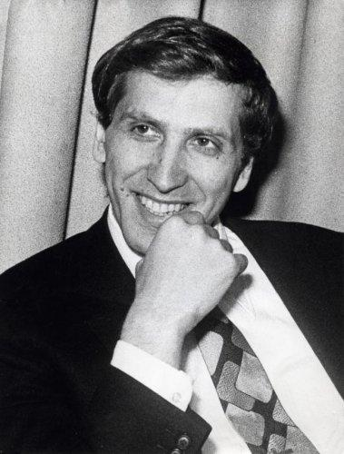

Chess Career
Fischer took newfound passion into the world in on January 17th, 1951. The former Scottish champion, Master Max Pavey, was holding a simultaneous exhibition and young Fischer participated. Even though Fischer lost his play caught the attention of Brooklyn Chess Club President, Carmine Nigro. Nigro took Fischer in and became his coach. In July 1956, Fischer won the US Junior Chess Championship.He became the youngest-ever Junior Champion at age 13. Then in 1958, at 15, he became the youngest international grandmaster. Fischer made history in 1972 by defeating Boris Spassky of the Soviet Union at the Reykjavik, Iceland world championships, thus marking the first time an American chess player had won the title. Fischer's defeat of a Soviet opponent, which became known as the "Match of the Century."